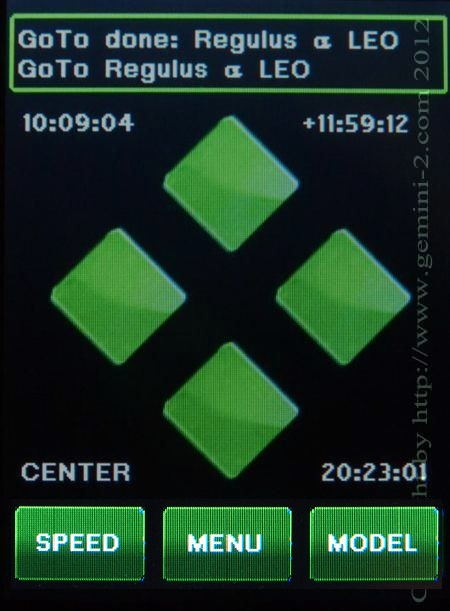

|
Gemini-2 and Gemini-1 Telescope Mount Controllers Website and Tutorials |
| Interactive Hand-Controller Menus - click on green button to Navigate |
|  | You now have to center the object using either the
button the front of the Hand controller or the buttons on the back of
the hand controller. If you have want is called a Standard (Classic) hand controller hooked
up to the Standard Hand controller port, you can use that also.
You can also use the Web interface, or the ASCOM hand controller.
Basically, any method that will center the star will work. But
please NOTE that YOU HAVE TO COME BACK HERE AND HIT THE MODEL BUTTON
after centering the star. Hit the MODEL button now. On Firmware hand controller firmware dated July 7 or later the Goto button has been renamed Menu. |